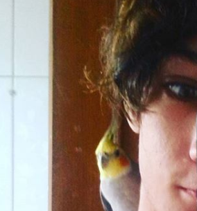

Kira (Uma pastora alemã belga)Ela tem quase um ano, e muita energia, é muito mansa, mas assusta, pois gosta de pular, adora pelucias de porco e é muito carinhosa. |
|
|  | Axl (O calopsita)Ele era bem novo quando peguei, mas não tenho certeza da idade, gosta de comer e é meio estressado, mas no fim das contas, gosta mesmo é de um carinho atrás da orelha. |